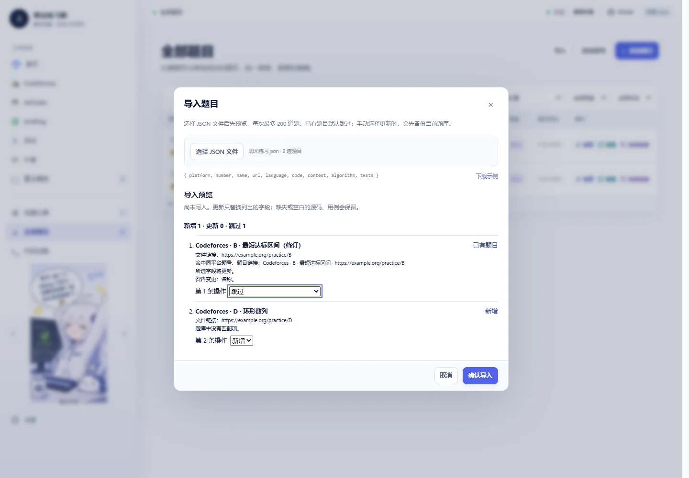

先看预览，再决定是否导入
- 在「全部题目」点「导入」，下载示例 JSON。按示例填写平台、题名、原题链接和需要的代码或用例；每批最多 200 题。
- 选择文件并预览。准备两条记录来试：一条沿用库中某题的原题链接，另一条用全新的题号和链接。查看哪些被标为已有、哪些是新增。
- 已有题默认跳过。只需要改题面资料时选「只更新资料」，核对变更后再确认。只有确实要覆盖源代码或用例时，才选择相应的更新方式。
核对导入结果
重新打开原题查看源码和用例，再搜索新题。前者应保留你选择保留的部分；后者只出现一次。若提示记录已变化，重新预览，不要重复提交旧预览。
